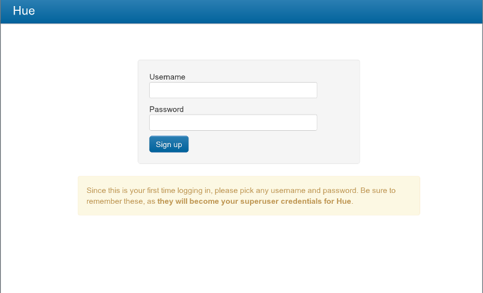

Table of Contents
Hue is a graphical user interface to operate and develop applications for Apache Hadoop. Hue applications are collected into a desktop-style environment and delivered as a Web application, requiring no additional installation for individual users.
This guide describes how to install and configure a Hue tarball. For information about installing Hue packages, see Installing Hue.
There is also a companion SDK guide that describes how to develop new Hue applications: Hue SDK Documentation
Conventions Used in this Guide:
-
Commands that must be run with
rootpermission have a#command prompt. -
Commands that do not require
rootpermission have a$command prompt.
The following instructions describe how to install the Hue tarball on a multi-node cluster. You need to also install Hadoop and its satellite components (Oozie, Hive…) and update some Hadoop configuration files before running Hue.
Hue consists of a web service that runs on a special node in your cluster. Choose one node where you want to run Hue. This guide refers to that node as the Hue Server. For optimal performance, this should be one of the nodes within your cluster, though it can be a remote node as long as there are no overly restrictive firewalls. For small clusters of less than 10 nodes, you can use your existing master node as the Hue Server.
You can download the Hue tarball here: gethue.tumblr.com/tagged/release
Hue employs some Python modules which use native code and requires certain development libraries be installed on your system. To install from the tarball, you must have the following installed:
Table 1. Required Dependencies
| Redhat | Ubuntu |
|---|---|
| gcc | gcc |
| g++ | g++ |
| libxml2-devel | libxml2-dev |
| libxslt-devel | libxslt-dev |
| cyrus-sasl-devel | libsasl2-dev |
| cyrus-sasl-gssapi | libsasl2-modules-gssapi-mit |
| mysql-devel | libmysqlclient-dev |
| python-devel | python-dev |
| python-setuptools | python-setuptools |
| python-simplejson | python-simplejson |
| sqlite-devel | libsqlite3-dev |
| ant | ant |
| libsasl2-dev | cyrus-sasl-devel |
| libsasl2-modules-gssapi-mit | cyrus-sasl-gssapi |
| libkrb5-dev | krb5-devel |
| libtidy-0.99-0 | libtidy (For unit tests only) |
| mvn | mvn (From maven2 package or tarball) |
| openldap-dev / libldap2-dev | openldap-devel |
The full list is here: https://github.com/cloudera/hue#development-prerequisites
Configure $PREFIX with the path where you want to install Hue by running:
$ PREFIX=/usr/share make install $ cd /usr/share/hue
You can install Hue anywhere on your system, and run Hue as a non-root user.
The Shell application needs root privileges to launch various sub-processes as
the logged in users. $USER should be the group of the user running Hue (same as
its username).
It is a good practice to create a new user for Hue and either install Hue in
that user’s home directory, or in a directory within /usr/share.
Q: I moved my Hue installation from one directory to another and now Hue no. longer functions correctly.
A: Due to the use of absolute paths by some Python packages, you must run a series of commands if you move your Hue installation. In the new location, run:
$ rm app.reg $ rm -r build $ make apps
Q: Why does "make install" compile other pieces of software? A: In order to ensure that Hue is stable on a variety of distributions and architectures, it installs a Python virtual environment which includes its dependencies. This ensures that the software can depend on specific versions of various Python libraries and you don’t have to be concerned about missing software components.
Install Hadoop -~~~~~~~
Depending on which apps you need, you need to make sure that some Hadoop services are already setup (that way Hue can talk to them).
Table 2. Dependency
| Component Applications | Notes |
|---|---|
| HDFS Core, Filebrowser | HDFS access through WebHdfs or HttpFS |
| MR1 JobBrowser, JobDesigner, Beeswax | Job information access through hue-plugins |
| MR2/YARN JobBrowser, JobDesigner, Beeswax | Job information access through hue-plugins |
| Oozie JobDesigner, Oozie | Oozie access through REST API |
| Hive Beeswax | Requires HiveServer2 |
| HBase HBase Browser | Requires Thrift 1 service |
| Pig Pig Editor | Requires Oozie |
| Sqoop2 Sqoop Editor | Requires Sqoop2 server |
| Search Search | Requires Solr server |
| Impala Impala Editor | Requires an Impalad |
| ZooKeeper ZooKeeper Browser | Requires ZooKeeper server and REST server |
| Spark Spark Editor | Requires Spark Jobserver |
You need to enable WebHdfs or run an HttpFS server. To turn on WebHDFS,
add this to your hdfs-site.xml and restart your HDFS cluster.
Depending on your setup, your hdfs-site.xml might be in /etc/hadoop/conf.
<property> <name>dfs.webhdfs.enabled</name> <value>true</value> </property>
You also need to add this to core-site.html.
<property> <name>hadoop.proxyuser.hue.hosts</name> <value>*</value> </property> <property> <name>hadoop.proxyuser.hue.groups</name> <value>*</value> </property>
If you place your Hue Server outside the Hadoop cluster, you can run an HttpFS server to provide Hue access to HDFS. The HttpFS service requires only one port to be opened to the cluster.
Also add this in httpfs-site.xml which might be in /etc/hadoop-httpfs/conf.
<property> <name>httpfs.proxyuser.hue.hosts</name> <value>*</value> </property> <property> <name>httpfs.proxyuser.hue.groups</name> <value>*</value> </property>
Hue communicates with the JobTracker via the Hue plugins, which is a jar
file that you place in your MapReduce lib directory.
If you JobTracker and Hue are located on the same host, copy it over.
$ cd /usr/share/hue $ cp desktop/libs/hadoop/java-lib/hue-plugins-*.jar /usr/lib/hadoop-0.20-mapreduce/lib
If you JobTracker runs on a different host, you need to scp the Hue plugins
jar to the JobTracker host.
Then add this to your mapred-site.xml and restart your JobTracker.
Depending on your setup, your mapred-site.xml might be in /etc/hadoop/conf.
<property> <name>jobtracker.thrift.address</name> <value>0.0.0.0:9290</value> </property> <property> <name>mapred.jobtracker.plugins</name> <value>org.apache.hadoop.thriftfs.ThriftJobTrackerPlugin</value> <description>Comma-separated list of jobtracker plug-ins to be activated.</description> </property>
You can confirm that the plugins are running correctly by tailing the daemon logs:
$ tail --lines=500 /var/log/hadoop-0.20/hadoop*jobtracker*.log | grep ThriftPlugin 2009-09-28 16:30:44,337 INFO org.apache.hadoop.thriftfs.ThriftPluginServer: Starting Thrift server 2009-09-28 16:30:44,419 INFO org.apache.hadoop.thriftfs.ThriftPluginServer: Thrift server listening on 0.0.0.0:9290
Hue submits MapReduce jobs to Oozie as the logged in user. You need to
configure Oozie to accept the hue user to be a proxyuser. Specify this in
your oozie-site.xml (even in a non-secure cluster), and restart Oozie:
<property>
<name>oozie.service.ProxyUserService.proxyuser.hue.hosts</name>
<value>*</value>
</property>
<property>
<name>oozie.service.ProxyUserService.proxyuser.hue.groups</name>
<value>*</value>
</property>If you are setting $HADOOP_CLASSPATH in your hadoop-env.sh, be sure
to set it in such a way that user-specified options are preserved. For example:
Correct:
# HADOOP_CLASSPATH=<your_additions>:$HADOOP_CLASSPATH
Incorrect:
# HADOOP_CLASSPATH=<your_additions>
This enables certain components of Hue to add to Hadoop’s classpath using the environment variable.
If your users are likely to be submitting jobs both using Hue and from the
same machine via the command line interface, they will be doing so as the hue
user if they’re using Hue and via their own user account on the command line.
This leads to some contention on the directory specified by hadoop.tmp.dir,
which defaults to /tmp/hadoop-${user.name}. Specifically, hadoop.tmp.dir
is used to unpack jars in bin/hadoop jar. One work around to this is
to set hadoop.tmp.dir to /tmp/hadoop-${user.name}-${hue.suffix} in the
core-site.xml file:
<property>
<name>hadoop.tmp.dir</name>
<value>/tmp/hadoop-${user.name}${hue.suffix}</value>
</property>Unfortunately, when the variable is unset, you’ll end up
with directories named /tmp/hadoop-user_name-${hue.suffix} in
/tmp. Despite that, Hue will still work.
![[Important]](images/important.png) | |
The Beeswax server writes into a local directory on the Hue machine
that is specified by |
Hue’s Beeswax application helps you use Hive to query your data. It depends on a Hive Server 2 running in the cluster. Please read this section to ensure a proper integration.
Your Hive data is stored in HDFS, normally under /user/hive/warehouse
(or any path you specify as hive.metastore.warehouse.dir in your
hive-site.xml). Make sure this location exists and is writable by
the users whom you expect to be creating tables. /tmp (on the local file
system) must be world-writable (1777), as Hive makes extensive use of it.
![[Note]](images/note.png) | |
In |
Hue ships with a default configuration that will work for
pseudo-distributed clusters. If you are running on a real cluster, you must
make a few changes to the hue.ini configuration file (/etc/hue/hue.ini when installed from the
package version) or pseudo-distributed.ini in desktop/conf when in development mode).
The following sections describe the key configuration options you must make to configure Hue.
![[Tip]](images/tip.png) | Listing all Configuration Options |
|---|---|
To list all available configuration options, run: $ /usr/share/hue/build/env/bin/hue config_help | less This commands outlines the various sections and options in the configuration, and provides help and information on the default values. |
| Viewing Current Configuration Options |
|---|---|
To view the current configuration from within Hue, open: http://<hue>/dump_config |
| Using Multiple Files to Store Your Configuration |
|---|---|
Hue loads and merges all of the files with extension |
These configuration variables are under the [desktop] section in
the hue.ini configuration file.
Hue uses CherryPy web server. You can use the following options to change the IP address and port that the web server listens on. The default setting is port 8888 on all configured IP addresses.
# Webserver listens on this address and port http_host=0.0.0.0 http_port=8888
For security, you should also specify the secret key that is used for secure hashing in the session store. Enter a long series of random characters (30 to 60 characters is recommended).
secret_key=jFE93j;2[290-eiw.KEiwN2s3['d;/.q[eIW^y#e=+Iei*@Mn<qW5o
| |
If you don’t specify a secret key, your session cookies will not be secure. Hue will run but it will also display error messages telling you to set the secret key. |
By default, the first user who logs in to Hue can choose any username and password and becomes an administrator automatically. This user can create other user and administrator accounts. User information is stored in the Django database in the Django backend.
The authentication system is pluggable. For more information, see the Hue SDK Documentation.
You can configure Hue to serve over HTTPS. To do so, you must install "pyOpenSSL" within Hue’s context and configure your keys.
To install pyOpenSSL, from the root of your Hue installation path,
do the following steps:
Run this command:
$ ./build/env/bin/easy_install pyOpenSSL
Configure Hue to use your private key by adding the following options to the
hue.iniconfiguration file:ssl_certificate=/path/to/certificate ssl_private_key=/path/to/key
Ideally, you would have an appropriate key signed by a Certificate Authority. If you’re just testing, you can create a self-signed key using the
opensslcommand that may be installed on your system:### Create a key $ openssl genrsa 1024 > host.key ### Create a self-signed certificate $ openssl req -new -x509 -nodes -sha1 -key host.key > host.cert
| Self-signed Certificates and File Uploads |
|---|---|
To upload files using the Hue File Browser over HTTPS requires using a proper SSL Certificate. Self-signed certificates don’t work. |
These configuration variables are under the [hadoop] section in
the hue.ini configuration file.
Hue only support one HDFS cluster currently. That cluster should be defined
under the [[[default]]] sub-section.
- fs_defaultfs
-
This is the equivalence of
fs.defaultFS(akafs.default.name) in Hadoop configuration. - webhdfs_url
- You can also set this to be the HttpFS url. The default value is the HTTP port on the NameNode.
- hadoop_hdfs_home
-
This is the home of your Hadoop HDFS installation. It is the
root of the Hadoop untarred directory, or usually
/usr/lib/hadoop. - hadoop_bin
-
Use this as the HDFS Hadoop launcher script, which is usually
/usr/bin/hadoop. - hadoop_conf_dir
-
This is the configuration directory of the HDFS, typically
/etc/hadoop/conf.
Hue only support one MapReduce cluster currently. That cluster should be defined
under the [[[default]]] sub-section. Note that JobBrowser only works with MR1.
- jobtracker_host
- The host running the JobTracker. In a secured environment, this needs to be the FQDN of the JobTracker host, and match the "host" portion of the ‘mapred’ Kerberos principal full name.
- jobtracker_port
- The port for the JobTracker IPC service.
- submit_to
-
If your Oozie is configured with to talk to a 0.20 MapReduce service, then
set this to
true. Hue will be submitting jobs to this MapReduce cluster.
Hue only support one Yarn cluster currently. That cluster should be defined
under the [[[default]]] sub-section.
- resourcemanager_host
- The host running the ResourceManager.
- resourcemanager_port
- The port for the ResourceManager IPC service.
- submit_to
-
If your Oozie is configured with to talk to a Yarn cluster, then
set this to
true. Hue will be submitting jobs to this Yarn cluster. But note that JobBrowser will not be able to show MR2 jobs.
In the [beeswax] section of the configuration file, you can
optionally specify the following:
- beeswax_server_host
-
The hostname or IP that the Hive Server should bind to. By
default it binds to
localhost, and therefore only serves local IPC clients. - hive_home_dir
- The base directory of your Hive installation.
- hive_conf_dir
-
The directory containing your
hive-site.xmlHive configuration file.
In the [liboozie] section of the configuration file, you should
specify:
- oozie_url
-
The URL of the Oozie service. It is the same as the
OOZIE_URLenvironment variable for Oozie.
In the [useradmin] section of the configuration file, you can
optionally specify the following:
- default_user_group
- The name of a default group that is suggested when creating a user manually. If the LdapBackend or PamBackend are configured for doing user authentication, new users will automatically be members of the default group.

After your cluster is running with the plugins enabled, you can start Hue on your Hue Server by running:
# build/env/bin/supervisor
This will start several subprocesses, corresponding to the different Hue components. Your Hue installation is now running.
Now that you’ve installed and started Hue, you can feel free to skip ahead to the Using Hue section. Administrators may want to refer to this section for more details about managing and operating a Hue installation.
A script called supervisor manages all Hue processes. The supervisor is a
watchdog process — its only purpose is to spawn and monitor other processes.
A standard Hue installation starts and monitors the following processes:
-
runcpserver- a web server based on CherryPy that provides the core web functionality of Hue
If you have installed other applications into your Hue instance, you may see other daemons running under the supervisor as well.
You can see the supervised processes running in the output of ps -f -u hue:
UID PID PPID C STIME TTY TIME CMD hue 8685 8679 0 Aug05 ? 00:01:39 /usr/share/hue/build/env/bin/python /usr/share/hue/build/env/bin/desktop runcpserver
Note that the supervisor automatically restarts these processes if they fail for any reason. If the processes fail repeatedly within a short time, the supervisor itself shuts down.
The Hue logs are found in /var/log/hue, or in a logs directory under your
Hue installation root. Inside the log directory you can find:
-
An
access.logfile, which contains a log for all requests against the Hue web server. -
A
supervisor.logfile, which contains log information for the supervisor process. -
A
supervisor.outfile, which contains the stdout and stderr for the supervisor process. -
A
.logfile for each supervised process described above, which contains the logs for that process. -
A
.outfile for each supervised process described above, which contains the stdout and stderr for that process.
If users on your cluster have problems running Hue, you can often find error
messages in these log files. If you are unable to start Hue from the init
script, the supervisor.log log file can often contain clues.
In addition to logging INFO level messages to the logs directory, the Hue
web server keeps a small buffer of log messages at all levels in memory. You can
view these logs by visiting http://myserver:8888/logs. The DEBUG level
messages shown can sometimes be helpful in troubleshooting issues.
Hue requires a SQL database to store small amounts of data, including user account information as well as history of job submissions and Hive queries. By default, Hue is configured to use the embedded database SQLite for this purpose, and should require no configuration or management by the administrator. However, MySQL is the recommended database to use. This section contains instructions for configuring Hue to access MySQL and other databases.
The default SQLite database used by Hue is located in: ‘/usr/share/hue/desktop/desktop.db.
You can inspect this database from the command line using the `sqlite3
program or typing `/usr/share/hue/build/env/bin/hue dbshell’. For example:
# sqlite3 /usr/share/hue/desktop/desktop.db SQLite version 3.6.22 Enter ".help" for instructions Enter SQL statements terminated with a ";" sqlite> select username from auth_user; admin test sample sqlite>
It is strongly recommended that you avoid making any modifications to the database directly using SQLite, though this trick can be useful for management or troubleshooting.
If you use the default SQLite database, then copy the desktop.db file to
another node for backup. It is recommended that you back it up on a regular
schedule, and also that you back it up before any upgrade to a new version of
Hue.
Although SQLite is the default database type, some advanced users may prefer to have Hue access an alternate database type. Note that if you elect to configure Hue to use an external database, upgrades may require more manual steps in the future.
The following instructions are for MySQL, though you can also configure Hue to work with other common databases such as PostgreSQL and Oracle.
| Tested Database Backends |
|---|---|
Note that Hue has only been tested with SQLite and MySQL database backends. |
To configure Hue to store data in MySQL:
Create a new database in MySQL and grant privileges to a Hue user to manage this database.
mysql> create database hue; Query OK, 1 row affected (0.01 sec) mysql> grant all on hue.* to 'hue'@'localhost' identified by 'secretpassword'; Query OK, 0 rows affected (0.00 sec)
- Shut down Hue if it is running.
To migrate your existing data to MySQL, use the following command to dump the existing database data to a text file. Note that using the ".json" extension is required.
$ /usr/share/hue/build/env/bin/hue dumpdata > <some-temporary-file>.json
Open the
hue.inifile in a text editor. Directly below the[[database]]line, add the following options (and modify accordingly for your MySQL setup):host=localhost port=3306 engine=mysql user=hue password=secretpassword name=hue
As the Hue user, configure Hue to load the existing data and create the necessary database tables:
$ /usr/share/hue/build/env/bin/hue syncdb --noinput $ mysql -uhue -psecretpassword -e "DELETE FROM hue.django_content_type;" $ /usr/share/hue/build/env/bin/hue loaddata <temporary-file-containing-dumped-data>.json
Your system is now configured and you can start the Hue server as normal.
After installation, you can use Hue by navigating to http://myserver:8888/.
The following login screen appears:

The Help application guides users through the various installed applications.
- Windows: Chrome, Firefox 3.6+, Internet Explorer 9+, Safari 5+
- Linux : Chrome, Firefox 3.6+
- Mac: Chrome, Firefox 3.6+, Safari 5+
Your feedback is welcome. The best way to send feedback is to join the mailing list, and send e-mail, to hue-user@cloudera.org.
If you find that something doesn’t work, it’ll often be helpful to include logs
from your server. (See the Hue Logging section. Please include the
logs as a zip (or cut and paste the ones that look relevant) and send those with
your bug reports.